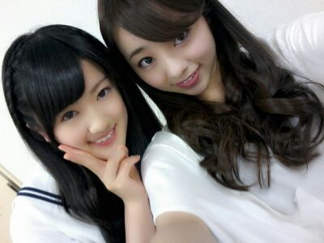
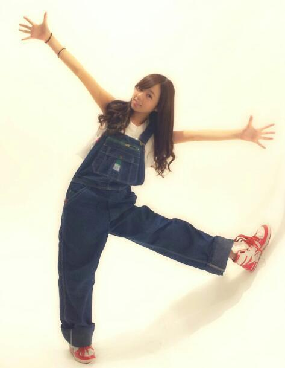

こちらを更新お願いします
hello ^^ /
ろってぃ−だよ !
日曜日は 朝から
とある撮影をしてました☆
とある撮影とはなんでしょう ^^?
かんづく人は なんとなく
わかっちゃいそうだ(((/´∨`)/
楽しかったなぁ〜ん(・З・)
真冬の撮影並みに
寒いこともしたしねっ、、、
思いでになった 笑
ひなちま♪とだよぉ〜/

(〃∨〃)
最近 食欲がダメだってばね (´；ω；｀)
せっちゃんが お弁当食べずに
ヨーグルトとかお豆腐
食べてるの見たら
見習わなくっちゃ... って思いました !
どうやったら
痩せれるんやろ(´・ω・)?
あっ、今日はこれから
お仕事です !
今日も１日頑張りますかねーーん♪
ちはると2人でインタビューに
行っって参ります !
そしてそして、
れいか、らりんお誕生日おめでとう !
19歳だね ^^
ではではっ ☆ミ
今日も１日、頑張ぁーーー?
ろってぃーーー )))))

のし.